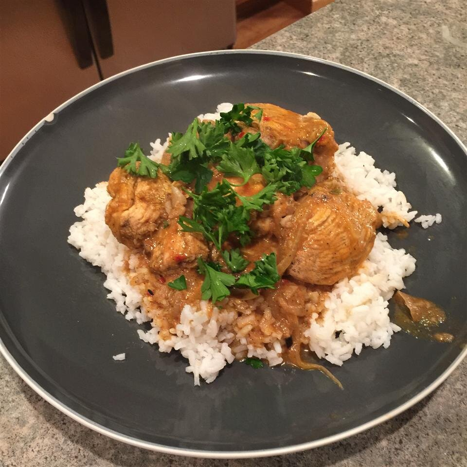

Chicken Korma

Description
A favorite dish from India comes to your table. It has rich and creamy texture that melts in your mouth.
No need to order take out on this one. Add some rice and steamed Asian vegetables with a side of na'an for an excellent meal.
Cooking Information
- Prep time: 20 minutes
- Cook: 30 minutes
- Total: 50 minutes
- Servings: 2
Ingredients
- 1 tablespoon of vegetable oil
- 4 (2 inch) cinnamon sticks
- 10 whole cloves
- cardamom seeds
- 1 onion, thinly sliced
- 2 cloves garlic, minced
- 2 (6 ounces) skinless, boneless chicken breast halves
- 1/2 teaspoon salt
- 1/2 teaspoon crushed red pepper flakes
- 1/2 teaspoon ground coriander
- 1/2 teaspoon ground cumin
- 1/2 cup tomato sauce
- 1/2 cup warm water
- 1/2 cup buttermilk
- 2 tablespoons chopped, fresh parsley
Directions
- In a large pot, heat oil over medium heat.
- Cook cinnamon sticks, cloves and cardamom seeds in hot oil for three minutes.
- Stir in onion and garlic, and cook until soft. Cut each chicken breast half into four pieces, and add to skillet.
- Cook for 5 to 8 minutes.
- Season with salt, red pepper flakesw, coriander and cumin.
- Stir in the tomato sauce and water. Continue cooking for 10 minutes.
- Stir in buttermilk, and cook for 5 to 8 minutes. Just before serving, mix in the parsley.
- Pour korma over rice and steamed vegetables with a side of na'an for full meal.